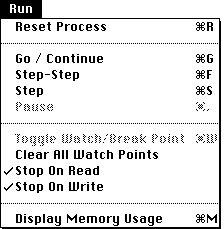

|  |
Reset Process
Go / Continue
Choosing Go / Continue will start the program executing from the location of the current PC. Execution will continue until
the program finishes
a break point or watch point is encountered
the program is interrupted using the Pause menu item.
an exception such as an illegal memory reference.
While a program is "Going", the display windows, with the exception of the I/O window, are normally not updated. However, a special xfc #UPDATE_WINDOWS call exists to force an update of all windows (see the I/O section in the Appendix).
Step-Step
Step-Step executes one instruction at a time. It then updates the contents of all the windows, and continues with the next instruction. Step-Step can be interrupted using the Pause menu item.
Step
Step executes one instruction, updates all the windows, and then stops.
Pause
The Pause command allows you to interrupt MacVAX whilst it is executing your program. Pause will interrupt both the Go / Continue and Step-Step modes of operation.
Toggle Watch / Break Points
The Toggle Watch/Break Points command is used to set watch and break points in your program. To set a watch or break point, select a byte in the Memory Dump or Program window, and choose the Toggle Watch/Break Points command. A rectangle appears around the location in the window to indicate the break point. This may also be done under operating system control using xfc #SET_WATCHPOINTS.
Clear All Watch Points
Removes all set watch/break points. This may also be done under operating system control using xfc #CLEAR_WATCHPOINTS.
Stop on Read
Stop on Write
These command toggles between enabling and disabling when watch/break points will cause a break in program execution. Turning Stop on Read on means that reads of watch and break points memory addresses will cause program execution to be interrupted. Turning Stop on Write on means that writes to watch and break points memory addresses will cause program execution to be interrupted. If both are disabled, MacVAX will continue execution as if no watch/break points are set. However, the simulator doesn’t forget where these points were, and will restore them if you choose to enable either option again at a later time.
MacVAX identifies watch and break points by drawing a rectangle around the locations in the Memory Dump and Program windows.
Display Memory Usage
Presents a dialog box with memory usage statistics.
|